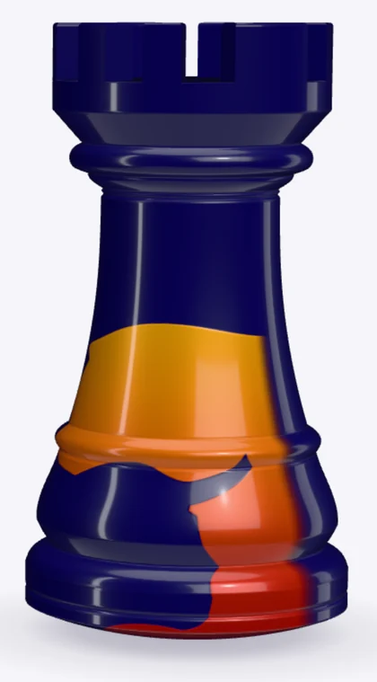
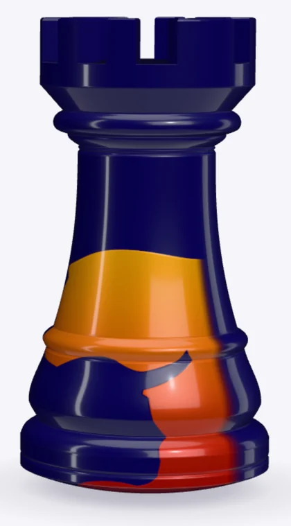
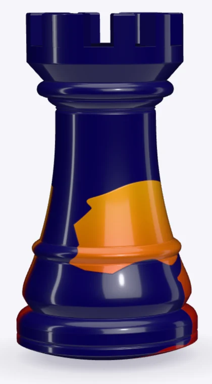
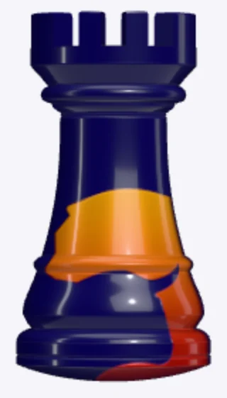
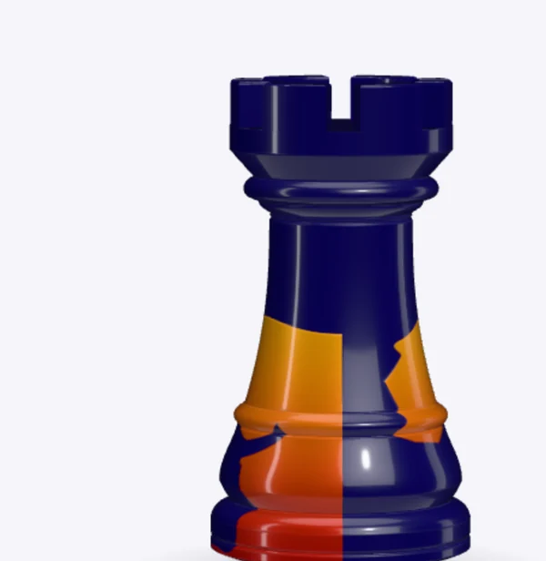
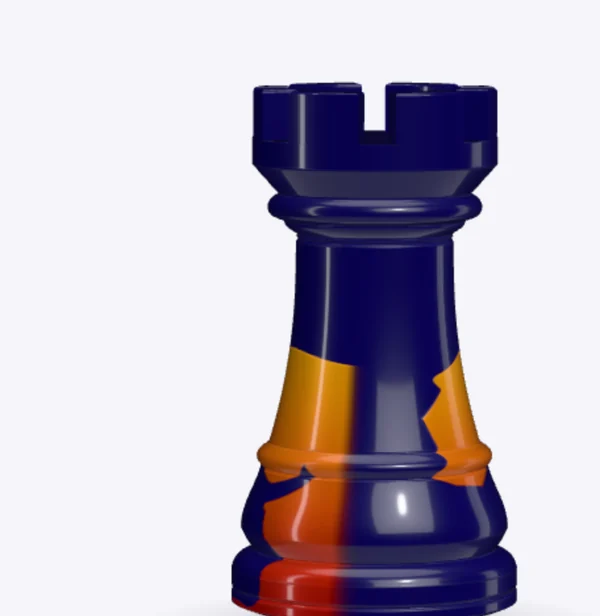

3 · Torre de duas faces
O desenho nas duas faces, sempre virado para o texto
O verso usa a mesma textura e o mesmo material, com UV planar espelhado (u = (−x − x0) / (x1 − x0)), então de trás o
desenho lê como o logo. A Torre descansa 35° virada para o lado do texto e gira de um descanso ao seguinte na
mesma curva da viagem (power3.inOut), só com a rolagem. São ~3 voltas na página, e ela termina de frente.
| Descanso | Torre | Face → texto | θ | Giro |
|---|---|---|---|---|
| Hero | direita | frente → esquerda | −35° | — |
| 01 Finanças Empresariais | esquerda | verso → direita | 215° | +250° |
| 02 Finanças Pessoais | direita | frente → esquerda | 325° | +110° |
| 03 Investimentos | esquerda | verso → direita | 575° | +250° |
| 04 Como trabalhamos | direita | frente → esquerda | 685° | +110° |
| 05 Programas | esquerda | verso → direita | 935° | +250° |
| 06 Sócios | fora de cena (direita) | frente → esquerda, esmaecida; recua 50% | 1045° | +110° |
| Assinatura | centro | frente, de frente | 1080° | +35° (+145° desde o 05) |






A emenda lateral
Como o verso é espelhado, em 90° e 270° o lado quente de uma face encosta no lado azul da outra. Sem tratamento aparece
uma costura vertical no meio da Torre quando ela gira. O miolo agora esmaece para azul-marinho nos últimos 6% do raio,
linha a linha, seguindo o raio r(y) do perfil (LIMB_FADE em Torre.tsx).


Efeito conhecido, e aceito: com a face virada para a direita (os descansos de verso, 01, 03 e 05) uma fatia fina do desenho da outra face aparece na borda da silhueta, como se o desenho desse a volta no corpo. Subir o esmaecimento acima de ~10% esconderia isso, mas encurtaria o corpo vermelho do touro na vista frontal.
decisão Duas faces, 35° para o lado do texto, esmaecimento de 6%.
Sócios é o único momento sem Torre: a pose esmaece e recua durante a seção e volta na assinatura.